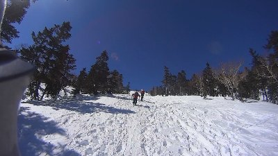
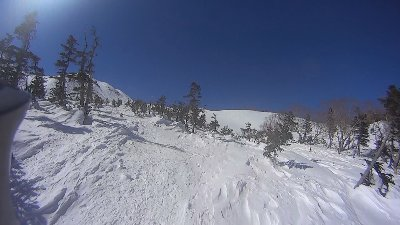
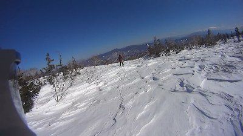
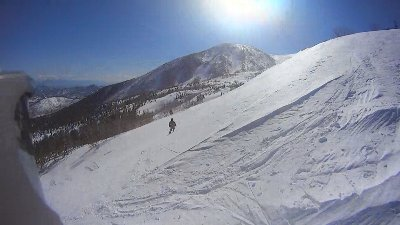

乗鞍岳山スキー | 2014年2月 |
|---|---|
| しふとべるメンバーのRyuuさんは、以前から山スキーを嗜まれているようで、最近、板とビンディングを新調したから乗鞍岳に行くというので、興味があった私は連れて行ってもらうことにしました。 ただ、私は山スキー道具など持っていません。普通のゲレンデスキーです。 聞くと、「スキー板を担いでスノーシューで登ればいいよ」と言うので「あぁ、そうか」と軽い気持ちで行ってみたのです。 山スキー道具にも色々あるようですが、Ryuuさんいわく、板は何でもよく、ビンディングが山スキー用（踵が上がるやつね）で、板の滑走面にシールと呼ばれる、坂道でも後ろに下がらないシートを張り付ければ良いんだそうです。 私の装備は、プラスチックの「お散歩用」に購入したスノーシューと、デカいザックの両脇にゲレンデスキー板を括り付けた格好です。 場所は乗鞍岳。山スキーをやる人たちには人気スポットらしいです。 土曜はMt.乗鞍スキー場でゲレンデスキーを楽しみ、日本家屋の宿「本棟」で一泊。ここは青白く濁った温泉で露天風呂もあり、とても気持ちが良いです。露天風呂は一つしかないので順番です。 部屋は日本家屋らしく畳部屋。石油ファンヒーターとコタツの暖かさがナイスです。のんびりできていい宿ですよ。 | |
 宿の部屋 良くないですか？ |  宿の露天風呂 |
| さて日曜日。いよいよ人生初の冬登山（だと思う）にチャレンジです。 Mt.乗鞍スキー場のリフトで一番上まで行き、私はスノーシューに替え、Ryuuさんは板にシールを張り付け出発です。（10時） 本日は快晴。昨日ほど風もなく暖かい気もします。ただ、既にここは標高2000m近い場所です。油断は出来ません。 乗鞍は登るルートが決まっていて、そこだけ木が生えていないんです。夏場の道路ではありません。かなり真っ直ぐ乗鞍岳を目指すコースです。メジャーな場所らしく、本日も数名の山スキーヤーが登っています。中には、私と同じように背中にボードを背負ったスノーシューの人もいます。 | |
 ここから出発です |  ここ、軽く昇りです。こんなコース |
| 出発するといきなりの坂です。結構な坂です。ここを真っ直ぐ登って行くのですが、私はすぐに息が上がり、スイスイと登るRyuuさんと離されます。 シールを付けた山スキーは、斜面を真っ直ぐ登っていきます。楽そうです。私を抜いていく山スキーヤーのオジサンも平気な顔。私だけがハァハァと苦しそう。 私にとっては険しい坂を登りきり、すこし緩い坂になったさらに向こうにRyuuさんが待っているのが見えます。待たせちゃいけないと気は急くけど、なかなか進めません。 | |
 乗鞍岳 のハズ |  だいぶ森林限界に近づきました |
| 坂を真っ直ぐではなく斜めに登ろうとすると、スノーシューに対してブーツが捻じれるので外れやすいんです。何度もスノーシューを嵌め直ししなければならず時間がかかります。雪が深いので、スノーシューを脱ぐと膝まで雪に潜ってしまい大変です。しかも斜面で。 途中で、ルート脇にテントを張っているのを見ました。どこかのワンゲルでしょうか。 2時間以上かかって森林限界まで来ました。ここまで休みは無いです。食べ物も飲み物もとっていません。飲み物休憩をしたいと進言すると「あの坂登ったら」と目の前のちょっとキツそうな坂を指して言います。 鬼です。ここにも鬼軍曹がいました。 あと30分ぐらいという言葉に、仕方なく坂を登っていきます。 軍曹が坂に対して廻りこむようにコースを取ったのに対して、私は垂直に登って行きました。別の先行者の跡が有ったのと、斜めに廻りこむとスノーシューが捻じれて外れやすいからです。 登り切った場所は、ある程度平らに近い雪原でした。松のような枝がチョイチョイ生えています。そしてRyuuさんを見失いました。 視界がいいはずの雪原で見当たらない。廻りこんで別の場所に出たのか？垂直コースは失敗だったか？ 携帯は先ほど電池が切れた音がしたので使えません。 登った坂を戻る気もせず、とりあえず先行者の跡を追っていくと、遥か先にRyuuさんの姿が見えました。あぁ〜よかった。 | |
 これマジに急登ですよ |  やべ〜Ryuuさんいない・・・ |
| あれから30分以上かかった休憩ポイントは単なる雪原で、周りに木が無くなったのと山頂に近いせいか風が吹いてました。止まっていると正直寒いです。（12時半） それでも飲み物を摂取し、「ここでお昼ですか」と軍曹に尋ねると「なに？食べたいの？仕方ないな」と食事が許可されたのでジャムパン一つを頬張りました。久しぶりの飲み物と食べ物の気がします。 私が食べている途中で軍曹は立上り「さあ、行くぞ」と進軍を宣言します。 急いで残ったジャムパンを口に押し込み、最後のあがきと水を飲み、雪原を歩き始めます。 しかし、疲れが出てきたのか、肩にずっしりとスキー板を括り付けたザックのひもが響きます。一歩一歩がしんどいです。スピードが違うため、またもや軍曹と離されます。 | |
 さっきより乗鞍岳近づいたな |  もう少しで乗鞍岳だけど、ここで断念 |
| 天気がいいので景色は最高です。左手に乗鞍岳が、右手に摩利支天岳が見みえます。真っ白な地面と青い空。振り返ると雪を頂いた八ヶ岳。ゴーグルをしていても眩しい世界です。この辺で標高2630ｍ位です。 結局は目指していた肩ノ小屋までたどり着けず、その下の公衆便所までで時間となってしまいました。（13時半） 悔しいけど、今の自分の体力と時間では無理のようです。 とりあえず昼飯かと軍曹に尋ねると「え、食べている時間ないよ。さっき食べたでしょ。さっさと降りないと時間無いから」・・・マジですか、ジャムパン一個だし・・「冬山はこんなもんだよ」と帰り支度を始めます。 私はザックにスノーシューを仕舞い、スキー板を履きます。山スキーはシールを取り外します。 | |
 東方面のパノラマ | |
| ここで気が付いたのですが、今回のためにスノーシューに取り付けるアイゼンを買ったのですが、それが両足とも無くなってました。途中で外れたのでしょう。取付簡単と言うのは取り外れるのも簡単なようです。結構高かったのにな〜 下りはスキーだから楽だろうと高を括っていたらトンデモナイ。風の芸術のように波打つ雪原は、滑ると固いんです。雪を蹴散らすどころか板が刺さります。しかも平らではなく、波打っていたり大波の様に固まっていたりと気が抜けません。 ボーゲンの格好でガリガリ滑るしかないのですが、踏ん張る脚がすぐにパンパンです。 「これが山スキーだぜ、きゃっほー！」とはしゃぐ軍曹。木々を縫って降りていきます。 それでも、登るよりは楽しいです。気が抜けない滑りを50分位して出発地点に戻りました。ここまで何回転んだことか。 そんな初めての山スキーでした。正直、スノーシューでスキー板担いで登るのはやめた方が良いね。体力有り余っているならいいけど、隣でスイスイ登る人見ちゃうとな〜 知らない世界を見るのは嬉しいです。皆さんもどうですか？ | |
|  この波打っている雪面が固いんです |  こんな所滑ってます |
| 写真＆コメント ｂｙ べっしー | |